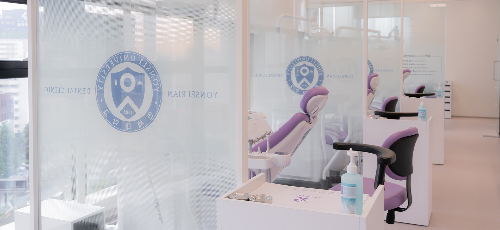
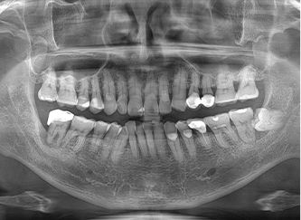
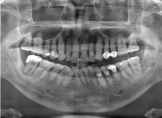
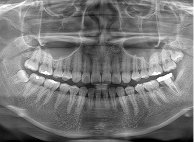
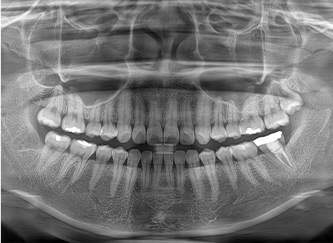

사랑니 발치
사랑니는 제3의 대구치(큰 어금니) 로서 관리가 되지 않아충치, 잇몸 통증 또는 인접치에 안 좋은 영향을 주거나, 구강내 낭종을 형성할 경우 발치가 필요합니다.

사랑니 발치 전후

Before

After

Before

After
사랑니발치 특이 사항
아랫 사랑니는 아랫턱 담당 신경 손상, 윗 사랑니는 상악동 천공 가능성이 있어
3D-CT 촬영을 통해 정확한 진단을 통해 발치하여야 합니다.
구강내 수술을 전문으로 하는 치주과 전문의에 의해 아프지 않고 능숙하게 제거할 수 있습니다.
발치 및 CT 촬영은 국민건강보험 적용을 받는 진료비가 산정됩니다.
수술 후에는 병원에서 안내하는 주의사항을 잘 따라 주셔야 합니다
사랑니 발치 통증은 환자의 나이, 발치 부위 및 매복 상태에 따라 다를 수 있으며
모든 사랑니 발치가 아픈 것은 아닙니다.
정확한 진단 및 상담을 통해 본인의 상태를 점검할 수 있습니다.